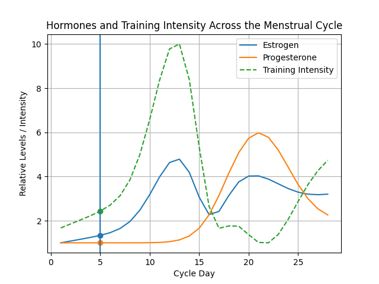
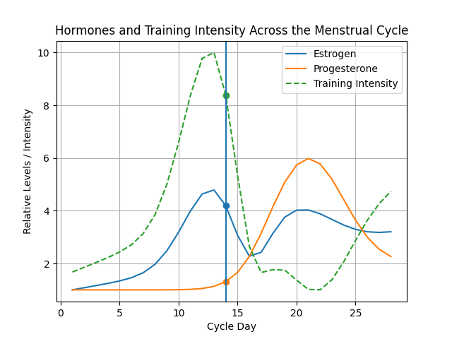
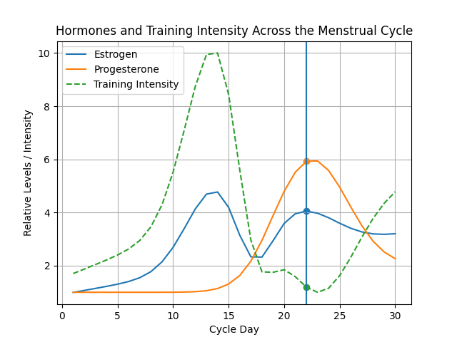

Hello! My name is Mary-Anne Chukwunyem.
I am a student at the University of Calgary in my final year of a Bachelor of Science in Kinesiology [2022 – 2026].
I have a strong interest in becoming a physician, specifically an Obstetrics and Gynecology Physician. My goal has always been to become a physician and I was indecisive on which specialty for a while, but over the past year I have developed a strong passion for women's health and well-being, and this has informed my decision to become an OBGYN. I am also quite passionate about creating a community not only for myself but for others, and this will be seen in the experience I have gained.
My hobbies include cooking, watching movies, and reading novels. This site includes my professional experiences and some projects I have worked on.
Hello! My name is Mary-Anne Chukwunyem.
I am a student at the University of Calgary in my final year of a Bachelor of Science in Kinesiology [2022 – 2026].
I have a strong interest in becoming a physician, specifically an Obstetrics and Gynecology Physician. My goal has always been to become a physician and I was indecisive on which specialty for a while, but over the past year I have developed a strong passion for women's health and well-being, and this has informed my decision to become an OBGYN. I am also quite passionate about creating a community not only for myself but for others, and this will be seen in the experience I have gained.
My hobbies include cooking, watching movies, and reading novels. This site includes my professional experiences and some projects I have worked on.
Relevant Coursework:
- KNES 259/260 - Human Anatomy and Physiology
- KNES 355 - Human Growth and Development
- KNES 495 - Physiological Aspects of Aging, Disease, and Physical Activity
- KNES 381 - Computer Application in Kinesiology
- KNES 565 - Pediatric Exercise Science
April 14, 2026
Menstrual Cycle Training Calculator
This project models the menstrual cycle and explores how hormonal fluctuations influence exercise performance and training strategies. By taking user input for cycle length and current cycle day, the program generates dynamic visualizations of estrogen and progesterone levels and calculates a corresponding training intensity profile.
Female physiology changes across the menstrual cycle due to fluctuations in estrogen and progesterone. These hormonal changes can affect energy levels, strength, endurance, and recovery. This project demonstrates how computational tools can be used to model these variations and support more individualized training approaches.
Code explanation
The calculator takes two inputs: cycle length and current cycle day. These values determine the scale of the model and allow the program to adapt to individual differences in cycle duration. Estrogen and progesterone levels are modeled using combinations of mathematical functions. Estrogen is represented by a gradual rise leading to a peak around ovulation, followed by a decline and a smaller secondary increase during the luteal phase.
Progesterone remains low early in the cycle and rises later, peaking in the luteal phase before declining. These curves are not exact clinical values but are designed to reflect general physiological trends observed in the menstrual cycle.
The model normalizes the cycle to a standard 28-day reference and then rescales it based on user input. This ensures that hormone patterns adjust proportionally for different cycle lengths. Training intensity is calculated as a function of hormone levels.
The resulting values are normalized to a 1–10 scale to provide a clear and interpretable representation of recommended training intensity. The program uses Matplotlib to generate a combined graph displaying estrogen, progesterone, and training intensity. A vertical line highlights the user’s current cycle day, allowing for real-time interpretation of their position within the cycle.
This model is designed to accept user input for cycle length and cycle day using Python’s input() function.
However, due to limitations of static web hosting (GitHub Pages), direct input is not supported in the embedded notebook.
To demonstrate functionality, example inputs are used, while the full interactive version is available in the linked notebook.
The graphs below demonstrate how the model responds to different inputs.
Changing cycle length and cycle day alters both hormone patterns and training intensity.
Example 1: 28-day cycle, Day 5

Example 2: 28-day cycle, Day 14

Example 3: 30-day cycle, Day 22

View the fully interactive version here:
Open Notebook
Scratch Simulator
This Scratch program is a visual representation of the Python code.
The simulation models menstrual cycle phases and generates training recommendations based on cycle day, using variables, conditional logic, and user input, reinforcing the logic used in the Python-based analysis.
This project allowed me to explore how computational tools can be used to model physiological processes and apply them to real-world training scenarios. By focusing on menstrual cycle variability, I was able to connect concepts from kinesiology with programming and data visualization to create a tool that is both functional and meaningful.

Clinical & Healthcare Experience
• Volunteer, Rehabilitation & Fitness Program (University of Calgary | June 2023 – Present): Assisted clients with physical disabilities, collaborated with physiotherapists, and instructed participants in proper strength training techniques.
• Physiotherapist Assistant Shadowing (Wellpath Physiotherapy & Wellness Ltd | Summer 2023): Shadowed senior physiotherapists and assisted patients with mobility.
Other Experience & Leadership
• Host/Server/Runner (Cineplex VIP Cinemas | 2023 – Present): Delivered exceptional customer service and managed POS transactions while balancing multiple responsibilities.
• Nigerian Students Association: Served as Secretary (2023-2024) and President (2024-2025).
Achievements & Skills: Teagle Foundation Scholarship. Strong communication skills, proficient in Excel, Gimp, Word. Outside of school, I enjoy reading novels, watching movies, and cooking. Future Goal: Work in medicine as an OBGYN physician.